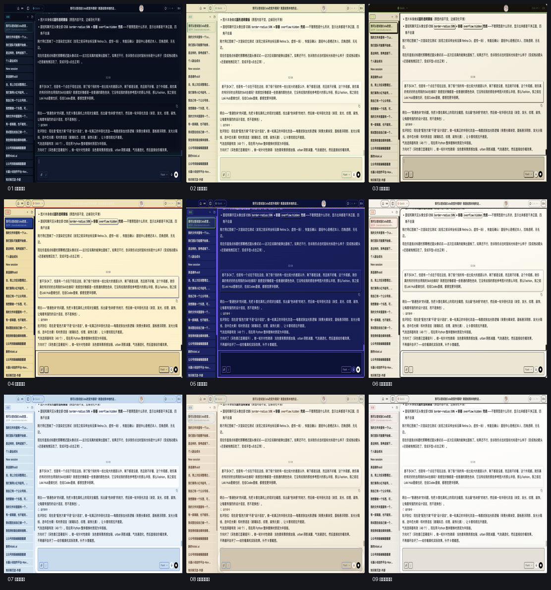

PUBLIC SETLIST / 7 PUBLIC CASES / 3 FLAGSHIP PROJECTS / UPDATED 2026-08-29
工具一直在换。
工具一直在换。
留下来的是还在改的那几件。
我会用 AI 做产品，也会拿它处理自己的阅读、写作和工作。这里放的，是那些我做完第一版以后还在继续改的东西。
我把它们分成三条路线，方便你挑自己感兴趣的看。每一页都写我当时为什么做、哪一步卡住、后来怎么改。能确认的写确认，没确认的就写没确认。



先看我最想给你看的三件东西。
01
九套皮肤进入真实工具并记住选择。 
公开节目时间帧采样；完整来源、四人档案与隔离评测请进入案例页查看。 
真实编辑器把正文、人物、前情和写作工具放在同一个长期空间里；完整体验需要登录。
个人化界面系统
COLA × LOKI HUB × CODEX / 通用工具如何变成个人空间我每天都要面对这些 AI 工具。前段时间从换颜色开始，后来一路改到菜单、弹窗、输入区和更新后的恢复。
公开案例 · 真机界面已验证进入项目故事 →
02人物视角蒸馏
公开证据 × 隔离评测 / 看判断动作能不能迁移我喜欢看一个人遇到麻烦时先看什么、最后留下什么。公开材料被拆成证据，再拿没见过的新题检查判断会不会走样。
研究型工作模型 · 内部评测进入项目故事 →
03InkPanda · AI 长篇写作
上下文 × 记忆 × 一致性 / 让 AI 记住同一部长篇写到后面，AI 会忘记人物受过的伤，也会漏掉早先的伏笔。作者继续写，系统负责把相关记忆找回来。
产品已经开放 · 完整体验需要登录进入项目故事 →
有些事我想看看，它能不能陪我久一点。
这里放两个每天会回来的东西。每日洞见帮我记住读书时真正卡住我的问题；Health 把饮水、饮食和身体目标放回同一个入口。一个用了 AI，一个没有把 AI 当主角，公开页都只写目前能确认的部分。
04
视觉导览：730 天阅读系统的公开展台；四天洞见样例请进入案例页查看。 
这些是脱敏后的真实产品画面；完整功能仍以实际产品体验为准。
730 天每日洞见系统
阅读 × 回看 × 长期记忆 / 每天留下一张未来会回来找我的卡我读完书常常记不住当时为什么被击中，于是每天留下一次冲突、一个边界和一个以后还想回答的问题。
AI 阅读工作流
- 每日动作从一本书留下一个冲突、边界和问题
- 留下记录公开案例页已有四天洞见卡结构
- 未来调用按日期回看，生成完以后还会再回来
公开案例 · 真实样例持续补充进入项目故事 →
05Loki's Health
本地优先 × 脱敏公开 / 让身体记录能够被照顾和回看围绕真实身体记录生长的本地优先健康 App；公开页只展示脱敏界面、产品判断与隐私边界。
个人记录系统（非 AI 核心）
- 持续入口饮水、饮食、活动与身体目标集中记录
- 留下记录只读同步与手动记录分开保存和回看
- 公开边界仅展示脱敏截图，不公开真实健康数值
真实产品 · 展示内容已经脱敏进入项目故事 →
有些工具功能都在，问题是普通人根本不想先学半天。
电子书转换器就是这样来的。我保留 Calibre 的转换能力，把命令行藏起来，只留下拖入文件、选格式、看进度和打开结果。

有些东西就是因为喜欢，才愿意多折腾几轮。
【恋之上上签】单独放在这里。它从私人喜欢开始，也逼着我认真决定歌词能用到哪里、AI 可以做什么、哪些判断必须留在自己手里。